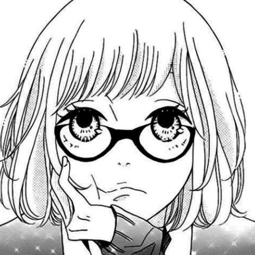

Hello, I'm Yudin ||💙Blue is my favourite color. 🥑Avocado is y favourite fruit . 🍽️Made by my mom is my fav dishes! 😁I like joking but another time i can be serious (for example lika in the group work). 😊Half of my friends say that I'm kind of shy and silent person. But the other side says that I'm not. I have thousands dreams but my laying on the bed there's so much more😟 At the point, let's be firends!👋